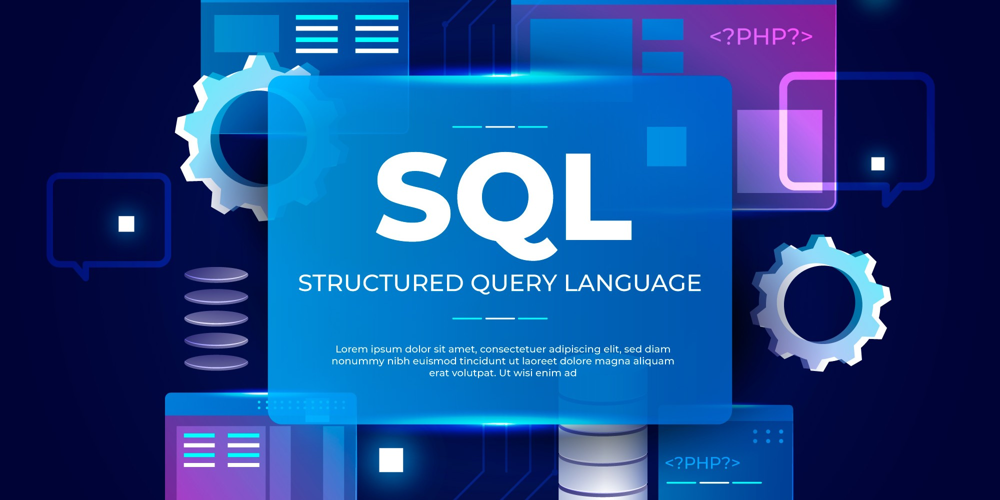

At the forefront of the data revolution, I convert raw data into actionable insights that drive informed decision-making. I am a passionate Data Analyst & BI Developer with a background in Agricultural Extension and Rural Development and 2 years of experience in both manufacturing and fintech. Leveraging my expertise in Excel, Power BI, and SQL, I specialize in data visualization, reporting automation, and business intelligence to transform raw data into strategic, actionable insights.
My goal is to drive informed decision-making across sectors by crafting data-driven solutions that simplify challenges and unlock new opportunities for growth and efficiency. I am committed to using my skills to contribute to meaningful advancements in data analysis while continuously expanding my expertise in Python and Machine Learning to enhance my analytical capabilities.
In essence, I strive to be a catalyst for smarter, more efficient operations through the power of business intelligence and innovative data solutions.

This dashboard shows the Analysis of supplier performance for Enterprise Manufacturers Ltd to identify defect trends, downtime causes, and procurement inefficiencies. Using Power BI, I visualized vendor, plant, and material performance, highlighting high-risk suppliers and costly defects.

This project focused on cleaning, transforming, and analyzing sales and product data to extract business insights. Key takeaways include identifying the best-performing product categories, most profitable products, and top suppliers. The dataset was optimized by removing redundancies and improving structure, allowing for better decision-making based on sales trends and revenue impact.
Retail Sales Analysis using Excel

An Excel dashboard project analyzing fashion retail sales to uncover suburb trends, buyer impact, and seasonal sales patterns.
Walmart Sales Report Analysis using SQL

This project aims to explore the Walmart Sales data to understand top performing branches and products, sales trend of of different products, customer behaviour. The aims is to study how sales strategies can be improved and optimized.